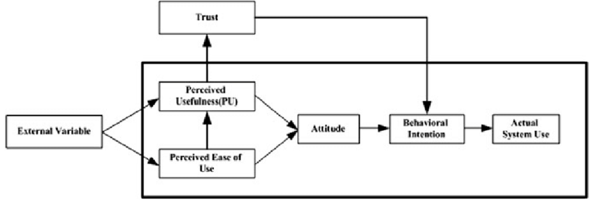
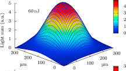

Research articles
Here you can find my research articles, which span quantitative modeling in physics and human-centered statistical research.
Acceptance of Sustainable Automotive Technologies

This review quantitatively examines factors shaping trust, acceptance, and use (TAU) of sustainable automotive technologies.
Quantitative modeling of luminescence intensity

This study looks at how certain bright glowing regions form inside ZnSe crystals when they are doped with iron. Using statistical and quantitative modeling, I show that these glowing areas move deeper into the crystal the longer it is heated.